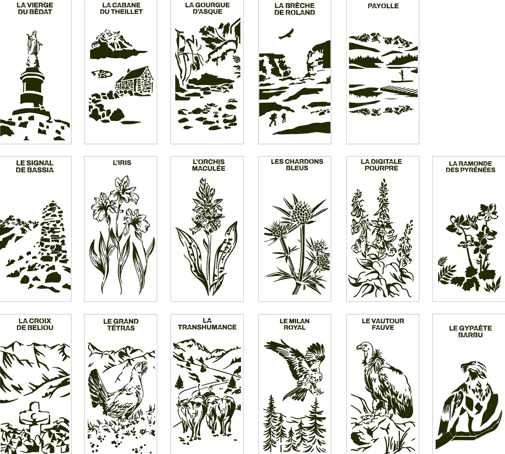

L’atelier
De la Bigorre à votre mur
Terre Gravée est la micro-entreprise de Romain Fourneaux, à Gerde, à côté de Bagnères-de-Bigorre. Les plaques reprennent les dessins de deux illustratrices, créés pour le décor d’Aquensis. La découpe se fait à Revel, le thermolaquage à Bagnères-de-Bigorre.

L’origine
Tout a commencé à Aquensis
Avant les plaques, il y a eu un décor. À Aquensis, le centre thermal de Bagnères-de-Bigorre, il fallait masquer une coursive technique. Le projet conçu pour Aquensis compte 30 niches de 1 m × 2 m, fermées par des panneaux de métal découpé.
Le thème : le patrimoine, la flore et la faune de la Bigorre. Maude Villatte et Lola Jacquet ont dessiné 60 illustrations, adaptées ensuite à la découpe.
Les panneaux sont en aluminium thermolaqué effet Corten, découpés au laser et rétroéclairés. L’idée est venue de là : proposer ces dessins aux particuliers, en plaques de 60 × 30 cm. Les douze plaques de la collection reprennent toutes des dessins de ce décor.
- Lieu
- Aquensis, centre thermal de Bagnères-de-Bigorre
- Projet
- Masquer une coursive technique : 30 niches de 1 m × 2 m
- Thème
- Patrimoine, flore et faune de la Bigorre
- Dessins
- 60 illustrations de Maude Villatte et Lola Jacquet
- Matière
- Aluminium thermolaqué effet Corten, découpe laser, rétroéclairage
La fabrication
Quatre étapes, de Revel à Bagnères-de-Bigorre
La découpe se fait à Revel (31). Le thermolaquage, l’assemblage, le contrôle et l’expédition, à Bagnères-de-Bigorre (65). Découpe, laquage et expédition dans un rayon de 150 km. ville au centre à choisir

Illustratrices
Dessin
Les dessins originaux sont signés Maude Villatte et Lola Jacquet.
Un dessin de la planche de l’atelier, avant la découpe.

Revel (31)
Découpe laser
Le laser découpe la feuille d’aluminium de 2 mm, jusqu’aux lettres pochoir du titre.
Aluminium brut, avant le laquage. Photo de la découpe à fournir

Bagnères-de-Bigorre (65)
Thermolaquage
Une peinture en poudre cuite au four : noir, gris ou doré.

Bagnères-de-Bigorre (65)
Contrôle et expédition
Assemblage, contrôle et envoi. Choisi en option, le kit LED est collé au dos de la plaque avant l’envoi.
Les illustratrices
Maude Villatte et Lola Jacquet
Les dessins des plaques sont signés de deux illustratrices. Pour Aquensis, elles ont dessiné 60 illustrations du patrimoine, de la flore et de la faune de la Bigorre.
Chaque dessin est ensuite adapté à la découpe laser, jusqu’au titre en lettrage pochoir.

Les avis
Les avis des clients
Pas encore d’avis.
Comment sont publiés les avis
Les avis sont publiés sous 7 jours au plus et restent en ligne 3 ans. Un avis est refusé ou retiré s’il contient des propos injurieux, grossiers ou diffamatoires, s’il est hors sujet, s’il donne des données personnelles, s’il porte sur un produit que l’atelier ne vend pas, s’il fait de la publicité ou s’il fait doublon. L’auteur d’un avis refusé est prévenu, avec la raison.
- Contrepartie offerte aux auteurs d’avis : aucune.
- Les avis sont publiés sans vérification d’achat : rien ne garantit que leur auteur a acheté la plaque.
- Ils sont affichés du plus récent au plus ancien, avec leur date.
Un doute sur un avis ? Signalez-le à contact@terregravee.fr.